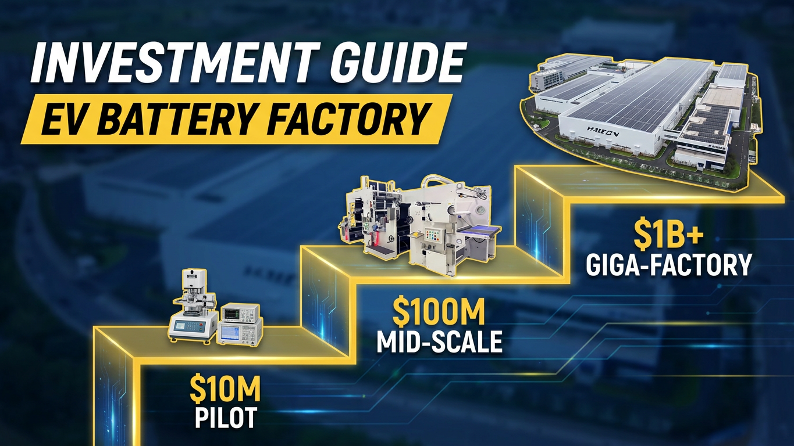

How Much Does a Complete EV Battery Production Line Cost? | Battery Factory Investment Guide
Understanding the Real Investment Behind a Lithium Battery Manufacturing Plant Building an EV battery factory requires much more than purchasing individual machines. A complete battery production line is a highly integrated manufacturing system involving: Electrode production Cell assembly Welding and packaging Electrolyte injection Formation and testing Material handling Intelligent warehouse automation For investors and manufacturers planning a new battery production facility, one of the first questions is: "How much does a complete EV battery production line actually cost?" The answer depends on multiple factors, including: Battery type and chemistry Production capacity Automation level Factory layout Equipment configuration Quality requirements Integration complexity This article explains the key investment factors behind a complete lithium battery production line and how companies can evaluate the right automation strategy before starting a battery factory project.

Summary
Understanding the Real Investment Behind a Lithium Battery Manufacturing Plant
Building an EV battery factory requires much more than purchasing individual machines.
A complete battery production line is a highly integrated manufacturing system involving:
Electrode production
Cell assembly
Welding and packaging
Electrolyte injection
Formation and testing
Material handling
Intelligent warehouse automation
For investors and manufacturers planning a new battery production facility, one of the first questions is:
"How much does a complete EV battery production line actually cost?"
The answer depends on multiple factors, including:
Battery type and chemistry
Production capacity
Automation level
Factory layout
Equipment configuration
Quality requirements
Integration complexity
This article explains the key investment factors behind a complete lithium battery production line and how companies can evaluate the right automation strategy before starting a battery factory project.
Technology
- Complete Lithium Battery Production Line Technology Structure
- A modern EV battery manufacturing plant consists of multiple interconnected production stages.
- The complete solution includes:
- 1. Electrode Manufacturing Technology
- >>Slurry Mixing System
- The first stage prepares battery electrode materials through precise mixing processes.
- Key requirements:
- Stable material consistency
- Accurate formulation control
- High production reliability
- >>Coating System
- The coating machine applies active materials onto metal foil.
- Critical performance factors:
- Coating accuracy
- Uniform thickness
- Production speed
- Material utilization
- >>Calendaring System
- The calendaring process improves electrode density and surface quality.
- >>Tab Cutting System
- Precision cutting prepares electrodes for cell assembly.
- 2. Cell Assembly Technology
- >>Winding System
- The winding machine creates the internal cell structure.
- Important factors:
- Alignment accuracy
- Production speed
- Process stability
- >>Hot Pressing System
- Improves:
- Cell structure consistency
- Internal contact quality
- Manufacturing reliability
- 3. Cell Packaging Technology
- The packaging stage includes:
- Ultrasonic welding
- Connector welding
- Mylar wrapping
- JR inserting can
- Can and cap laser welding
- These processes ensure:
- Mechanical protection
- Electrical reliability
- Product safety
- 4. Formation and Testing Technology
- Battery performance depends heavily on the formation process.
- The system includes:
- Baking
- Electrolyte injection
- Formation
- Seal pin welding
- Capacity grading
- Testing
- Automatic sorting
- 5. Factory Automation Technology
- A complete smart battery factory may also integrate:
- Automated material handling
- Production tracking
- MES integration
- ASRS warehouse systems
Challenge
Evaluating Battery Factory Investment Before Making a Major Decision
The battery industry has enormous growth potential, but building a manufacturing facility requires significant planning.
Many companies face several challenges before investment.
1. Lack of Clear Cost Structure
A battery production line is not a single machine purchase.
The total investment includes:
Production equipment
Automation systems
Factory infrastructure
Installation
Commissioning
Software integration
Engineering services
Without professional planning, companies may underestimate the actual project requirements.
2. Choosing the Wrong Automation Level
Different factories require different automation strategies.
For example:
A small pilot production line may not require the same automation level as a large-scale EV battery factory.
Incorrect decisions may lead to:
Excess investment
Low equipment utilization
Difficult future expansion
3. Integrating Multiple Manufacturing Processes
Battery manufacturing involves many independent processes.
The challenge is connecting:
Production equipment
Material transportation
Quality inspection
Warehouse management
A disconnected production line creates efficiency problems.
4. Controlling Long-Term Operating Costs
The cheapest initial investment is not always the best choice.
Companies must consider:
Labor costs
Production efficiency
Energy consumption
Maintenance requirements
Future capacity expansion
Solution
Customized Battery Production Line Planning Based on Business Requirements
The correct approach is not selecting equipment first.
It starts with understanding the factory goals.
Step 1: Analyze Production Requirements
The project evaluation considers:
Battery type
Target output
Product application
Factory size
Future expansion plans
Step 2: Design Complete Production Workflow
The production line is planned from:
Raw material input
↓
Manufacturing process
↓
Quality inspection
↓
Finished product storage
Step 3: Select Suitable Equipment Configuration
Equipment selection depends on
Capacity requirements
Automation level
Product specifications
Investment budget
Step 4: Integrate Smart Factory Systems
Modern battery factories require coordination between:
Production equipment
Logistics systems
Warehouse automation
Manufacturing software
Workflow & Layout
Complete Battery Factory Investment Planning Workflow
Phase 1: Project Requirement Analysis
Customer requirements are evaluated:
Battery application
Production capacity
Factory space
Automation target
Phase 2: Production Line Design
Engineering team develops:
Process flow
Equipment arrangement
Material movement plan
Factory layout
Phase 3: Equipment Configuration
Select:
Manufacturing machines
Automation systems
Testing equipment
Warehouse solutions
Phase 4: Installation and Commissioning
Includes:
Equipment installation
System integration
Production testing
Phase 5: Production Optimization
Improve:
Production efficiency
Process stability
Automation performance
Results & ROI
- Creating Long-Term Value Through Smart Battery Manufacturing
- A properly designed battery production line creates measurable business advantages.
- 1. Higher Production Efficiency
- Automation improves:
- Manufacturing speed
- Process consistency
- Equipment utilization
- 2. Reduced Labor Dependency
- Automated production reduces manual operations in critical processes.
- Benefits include:
- Lower labor requirements
- Better production stability
- Reduced human error
- 3. Improved Product Quality
- Precision manufacturing helps achieve:
- Stable battery performance
- Lower defect rates
- Better quality control
- 4. Better Investment Efficiency
- Professional planning helps avoid:
- Unnecessary equipment purchases
- Poor factory layouts
- Future modification costs
- 5. Scalable Production Capability
- A well-designed production line supports future growth through:
- Capacity expansion
- Additional automation modules
- Warehouse upgrades
Equipment List
- Complete EV Battery Production Line Equipment
- 1.Electrode Manufacturing Equipment
- Slurry Mixing System
- Coating Machine
- Calendaring Machine
- Tab Cutting Machine
- 2.Cell Assembly Equipment
- Winding Machine
- Hot Pressing Machine
- Ultrasonic Welding Machine
- Connector Welding Machine
- 3.Packaging Equipment
- Mylar Wrapping Machine
- JR Inserting Can Machine
- Can & Cap Laser Welding Machine
- 4.Electrochemical Processing Equipment
- Baking Machine
- Electrolyte Injection Machine
- Formation System
- Seal Pin Welding Machine
- 5.Testing Equipment
- Capacity Grading System
- Battery Testing Machine
- Automatic Sorting Machine
- Blue Film Wrapping Machine
- 6.Factory Automation Equipment
- Conveyor System
- Automated Material Handling System
- MES Integration
- ASRS Automated Warehouse
Project Overview / Opening
What Is the Real Cost of Building an EV Battery Factory?
The global transition toward electric vehicles and renewable energy storage has created strong demand for battery manufacturing capability.
However, building a competitive battery factory requires more than purchasing production machines.
Companies must create an integrated manufacturing ecosystem combining:
Advanced production technology
Automation
Quality control
Intelligent logistics
A complete EV battery production line is a strategic investment that determines:
Manufacturing efficiency
Product quality
Operating costs
Future competitiveness
Understanding the investment structure is the first step toward successful battery factory planning.
Key Points
- 1. Battery Production Line Cost Depends on Multiple Factors
- The investment is influenced by:
- Production capacity
- Battery type
- Equipment automation
- Factory requirements
- 2. Complete Solutions Reduce Project Risk
- Integrated planning helps companies avoid:
- Equipment incompatibility
- Workflow problems
- Production bottlenecks
- 3. Automation Creates Long-Term Advantages
- Smart manufacturing improves:
- Efficiency
- Quality
- Scalability
- 4. Factory Planning Should Come Before Equipment Purchase
- A successful battery factory starts with:
- Process design
- Layout planning
- Equipment selection
Implementation / Workflow
Battery Production Line Project Implementation Process
Step 1: Customer Requirement Discussion
Understand:
Battery products
Production targets
Factory conditions
Step 2: Technical Proposal Development
Prepare:
Production workflow
Equipment list
Layout design
Automation solution
Step 3: Equipment Manufacturing
Complete:
Machine production
Quality inspection
System preparation
Step 4: Factory Installation
Perform:
Equipment installation
Electrical connection
Automation integration
Step 5: Commissioning and Training
Complete:
Production testing
System adjustment
Operator training
Customer Value / Results
Helping Companies Build Competitive Battery Manufacturing Capability
A professional battery production line solution provides customers with:
1.Reduced Project Complexity
Customers receive support from:
Process planning
Equipment selection
Automation integration
2.Better Investment Decisions
Professional evaluation helps companies select:
Suitable technology
Appropriate capacity
Optimized equipment configuration
3.Faster Factory Deployment
Integrated project planning reduces delays during:
Installation
Commissioning
Production startup
4.Long-Term Manufacturing Growth
The solution supports customers in expanding:
EV battery production
ESS battery manufacturing
Industrial battery applications
Conclusion / Next Step
Build Your Battery Factory With the Right Production Strategy
A complete EV battery production line is a long-term investment that requires professional planning, suitable equipment selection, and reliable automation integration.
We provide complete lithium battery production line solutions, including:
Battery factory planning
Production line design
Equipment selection
Complete production line supply
Individual workstation equipment
Factory automation integration
ASRS intelligent warehouse solutions
Whether you are planning a new battery manufacturing plant or upgrading an existing production facility, our engineering team can help evaluate your project requirements and develop a suitable manufacturing solution.
Submit your project inquiry through our Contact page and share your battery type, production capacity, and factory requirements. We will help you analyze the suitable production process, equipment configuration, and implementation strategy.
SEO Title
How Much Does a Complete EV Battery Production Line Cost? | Battery Factory Investment Guide
SEO Description
Understanding the Real Investment Behind a Lithium Battery Manufacturing Plant
Building an EV battery factory requires much more than purchasing individual machines.
A complete battery production line is a highly integrated manufacturing system involving:
Electrode production
Cell assembly
Welding and packaging
Electrolyte injection
Formation and testing
Material handling
Intelligent warehouse automation
For investors and manufacturers planning a new battery production facility, one of the first questions is:
"How much does a complete EV battery production line actually cost?"
The answer depends on multiple factors, including:
Battery type and chemistry
Production capacity
Automation level
Factory layout
Equipment configuration
Quality requirements
Integration complexity
This article explains the key investment factors behind a complete lithium battery production line and how companies can evaluate the right automation strategy before starting a battery factory project.
Related Blog
Start with Your Business Challenge
Tell us about your warehouse, factory, or production requirements. We'll help you explore practical automation solutions and relevant project references.